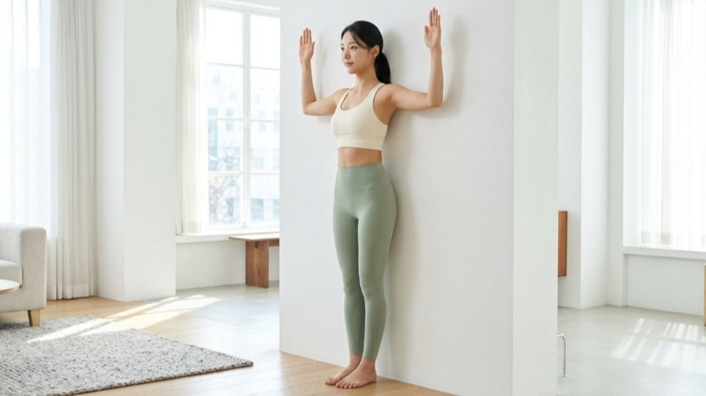
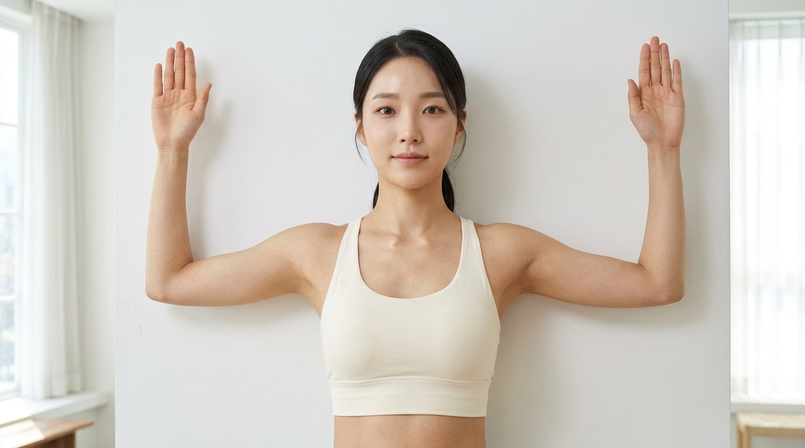
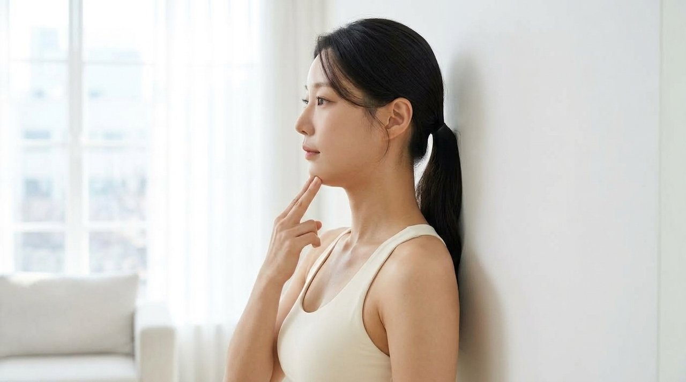
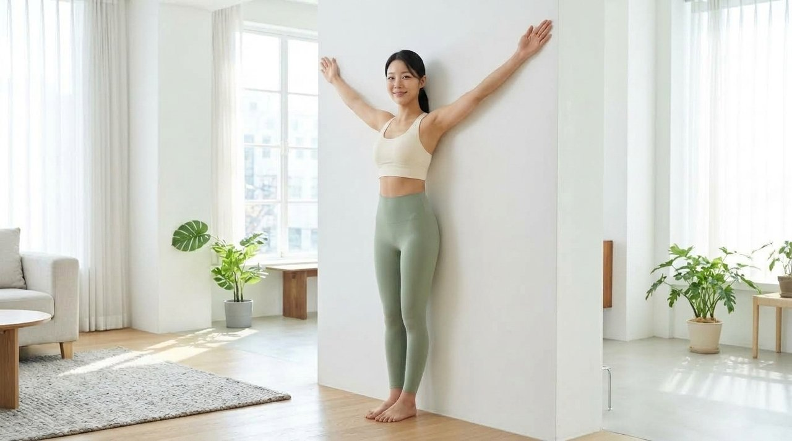
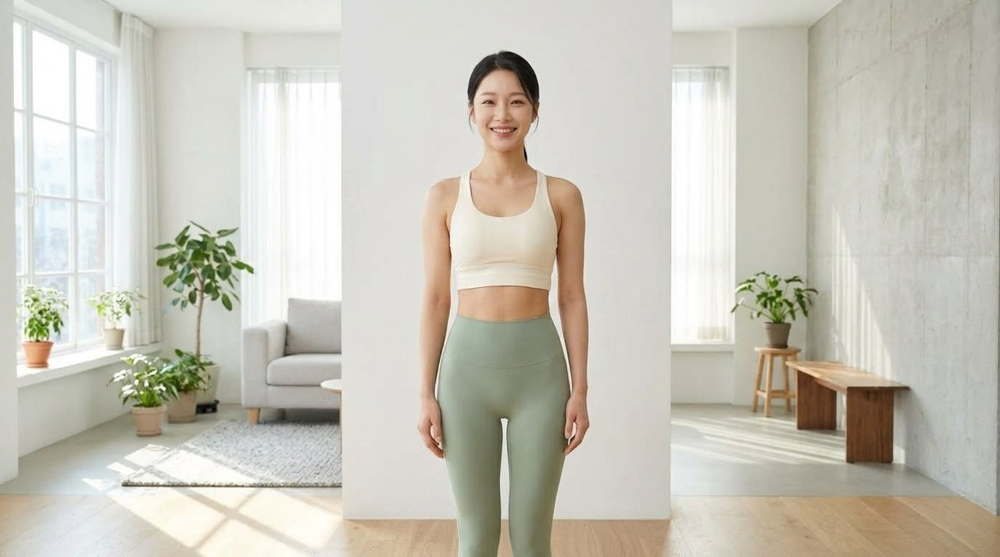

온종일 모니터를 주시하거나 이동 중에 고개를 떨구고 스마트폰을 다루다 보면, 퇴근 무렵 어깨 윗선이 뻐근하게 굳어 손으로 주무르게 되는 경우가 많습니다.
단순 피로감으로 넘기기 쉽지만, 머리의 중심축이 전방으로 기울어지면서 목덜미와 어깨죽지 근육군에 지속적인 과부하가 걸리는 신체 신호로 해석됩니다.
많은 분들이 결림을 덜어내기 위해 목을 좌우로 강하게 꺾어 관절 마찰음을 내거나 단단해진 부위를 세게 압박하곤 합니다.
하지만 지지 기반이 없는 상태에서 가해지는 강한 물리적 힘은 인대 긴장을 부추기고 중심 정렬을 회복하는 데 한계가 뚜렷합니다.

성인의 머리 무게는 대략 4~5kg 수준이지만, 고개가 앞으로 15도 기울어질 때마다 경추에 전해지는 실제 압력은 약 12kg으로 늘어납니다.
기울기가 30도에 이르면 18kg의 하중이 목덜미 주변 근육에 온전히 집중되는 것으로 확인됩니다.
목이 전방으로 빠지는 자세가 길어지면 머리가 바닥으로 쏟아지지 않도록 승모근과 견갑거근이 온종일 긴장 상태를 유지합니다.
근육 내 모세혈관 순환이 지연되고 피로 물질이 축적되면서 손을 대었을 때 단단한 덩어리처럼 느껴지는 뭉침 현상이 이어지게 됩니다.
| 고개 숙임 각도 | 경추 체감 하중 | 목어깨 근육 부담도 | 신체 상태 |
|---|---|---|---|
| 0도 (바른 정렬) | 약 4~5kg | 기준 안정 상태 | 자연스러운 C자 곡선 유지 |
| 15도 전방 기울임 | 약 12kg | 기준 대비 2.5배 증가 | 어깨죽지 근육 긴장 시작 |
| 30도 전방 기울임 | 약 18kg | 기준 대비 3.8배 증가 | 목덜미 뻐근함 및 두경부 압박감 |
| 45도 전방 기울임 | 약 22kg | 기준 대비 4.5배 이상 | 만성 어깨 결림 및 디스크 부담 |

서 있는 자세를 바르게 정돈하기 위한 무엇보다 직관적인 도구는 주변에서 쉽게 접할 수 있는 수직 벽입니다.
벽면에 몸통을 기대어 서는 과정은 뇌의 고유수용 감각을 자극하여 무너진 중심축을 인지하는 데 긍정적으로 작용합니다.
첫째로 뒤꿈치를 벽에서 반 주먹 정도 띄운 뒤, 엉덩이와 등 윗부분, 뒤통수를 차례로 접촉합니다.
둘째로 손가락으로 턱을 수평 방향으로 가볍게 밀어 넣으며 목덜미 뒷선이 위로 길어지는 감각을 60초간 유지합니다.

턱을 당긴 상태가 안정되면 양팔을 90도로 굽혀 W자 모양을 만들고 팔꿈치와 손등을 벽에 댑니다.
숨을 천천히 내쉬며 팔을 벽면을 따라 위로 밀어 올려 Y자 형태로 뻗어주는 동작을 진행합니다.
이 과정은 구부정한 자세로 단축되어 있던 가슴 앞쪽 소흉근을 늘려주고, 날개뼈를 아래로 끌어내리는 등 근육을 강화합니다.
유연성이 부족하여 팔이 벽에서 떨어지더라도 허리의 중립을 온전히 유지하며 허용 범위 내에서 부드럽게 움직이는 것이 바람직합니다.
| 구분 | 습관적 목 꺾기 / 강한 압박 | 벽 지지 3분 정렬 운동 |
|---|---|---|
| 방식 | 수동적 관절 꺾임 및 표면 마찰 | 자체 체중을 활용한 능동적 신경 재교육 |
| 목 관절 안전성 | 경추 후관절 헐거워짐 우려 | 경추 자연 만곡 보호 및 안전성 확보 |
| 어깨 정렬 지속성 | 일시적 자극 후 재발 가능성 | 견갑골 지지 근육 활성화로 균형 개선 |
| 소요 장비 | 고가 기구 또는 전문 방문 | 실내 평평한 벽면 하나면 충분 |


바른 신체 균형을 만들어가는 과정은 단기간의 격렬한 운동보다, 일상생활 틈새에 올바른 자극을 지속적으로 공급하는 데서 비롯됩니다.
식사 후 나른한 오후나 하루 일과를 마무리하는 저녁 시간, 벽에 등을 대는 3분의 작은 정성이 뻐근한 어깨죽지를 부드럽게 덜어내는 든든한 디딤돌이 되어줄 것입니다.